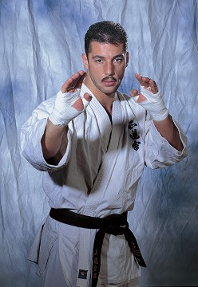
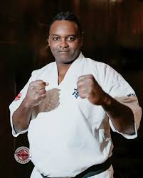
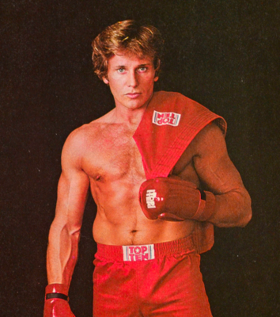
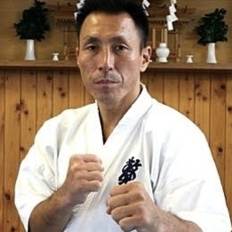
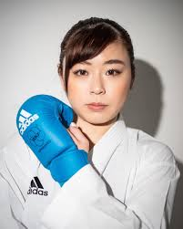
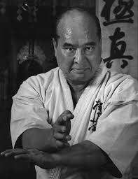
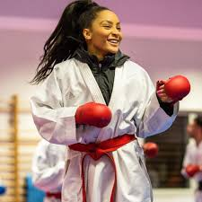
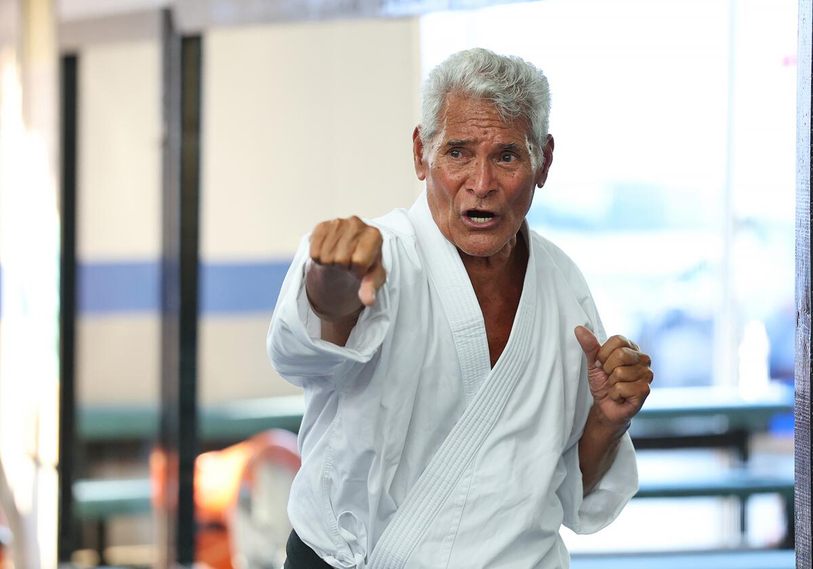

Principais Atletas do Karatê

Andy Hug
Ele foi o primeiro não-japonês a chegar à final do World Open, o mais prestigiado torneio de kyokushin no cenário internacional. Sua carreira teve destaque entre as décadas de 80 e 90.

Ewerton Teixeira
O paulistano conquistou a faixa preta aos 21 e, em 2001, já era campeão das Américas — título que ele repetiria outras cinco vezes. Teixeira também se orgulha de ter conquistado o World Open em 2007, quando derrotou Jan Soukup na final.

Joe Lewis
alistou-se no Corpo de Fuzileiros Navais dos EUA e foi estacionado em Okinawa, Japão, onde iniciou seu treinamento em Karate Shōrin-ryū, obtendo a faixa preta em apenas sete meses de treinamento intensivo. em apenas 22 meses, venceu o campeonato geral do torneio U.S. Nationals em 1966

Hajime Kazumi
O nome de Hajime Kazumi é sinônimo de respeito e admiração, graças às suas conquistas extraordinárias no kyokushin. Kazumi se destacou aos 20 anos, vencendo diversos campeonatos nacionais, regionais e mundiais.

Ayumi Uekusa
Uekusa é conhecida por sua técnica impecável e agilidade no tatame. Nascida no Japão, Uekusa começou a praticar karatê desde jovem e rapidamente se destacou como uma das melhores do mundo.

Masutatsu (Mas) Oyama
É reverenciado como o fundador do Kyokushin Karate, uma revolução que transformou fundamentalmente a forma como o karate é praticado e compreendido globalmente.

Lucie Ignace
Ignace é conhecida por sua versatilidade e precisão nos golpes. conquistou inúmeros títulos nacionais e internacionais ao longo de sua carreira.

Mike Stone
É o único campeão de karatê a se aposentar completamente invicto, com 91 vitórias consecutivas em combates de faixa preta